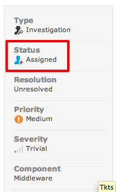
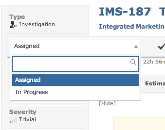
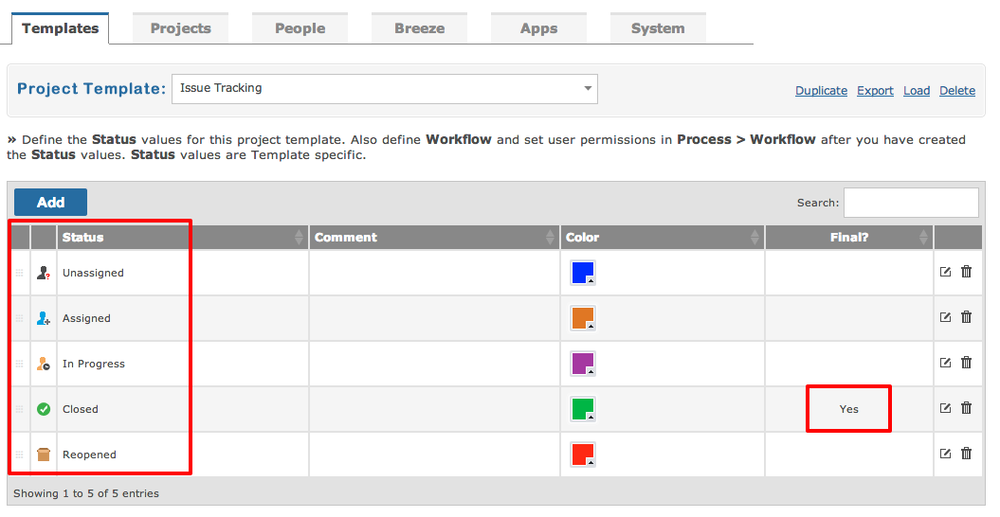
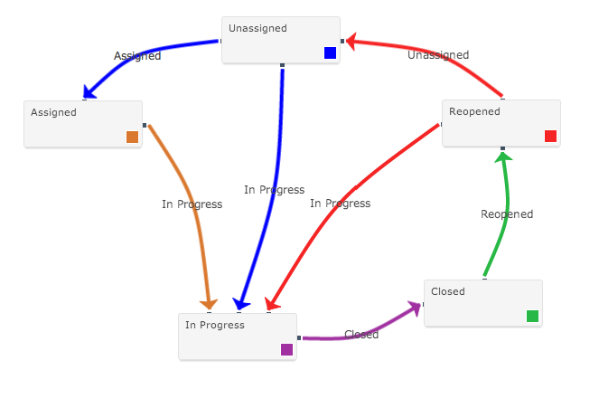
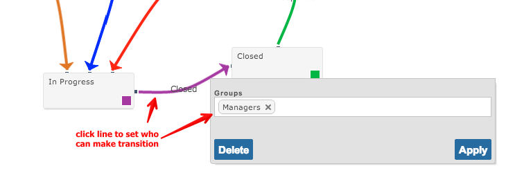
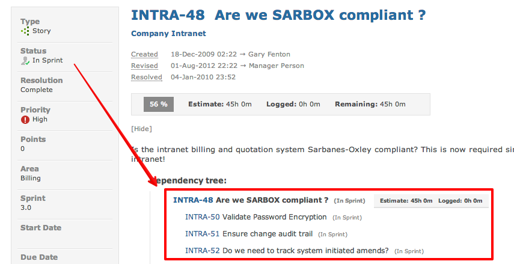
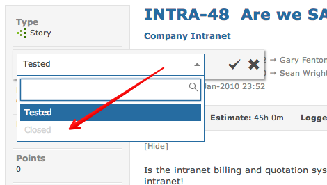

The goal of every item is to move from creation and closure. When viewing an item edit the status field.

You can select the next available status value.

Workflow is central to the life of a item. An item is created and at some point hopefully close.
An item moves through states that tell everyone else where it is at in the workflow.
Project Templates determine the status values that make up the workflow for your project.

Gemini administrators then design the workflow for different projects and processes. The following workflow details which status values are available at different points in the workflow.

The above workflow dictates that when an item is "Assigned" the next status can only be "In Progress". This is enforced when you attempt to change the items' status value.
Not everyone can move an item to a new status. Restrictions can be placed to ensure only those individuals in a particular user group can transition an item to the next stage.

An item that has associated child items (Dependencies) has one special workflow rule: you cannot close the parent until the all dependencies are closed beforehand. The following item has dependencies.

When attempting to change the status of a parent item you may find that the Closed status cannot be selected.

The Closed status will remain un-selectable until all dependencies have been closed.
The following videos present the flexibility and power of workflows found within Gemini.